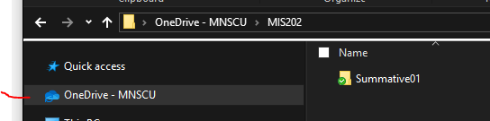
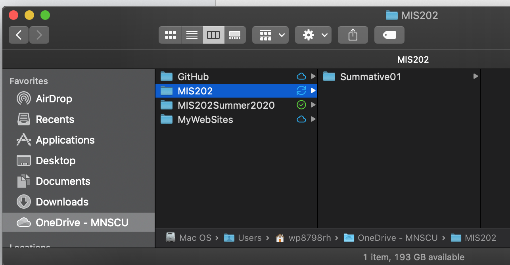
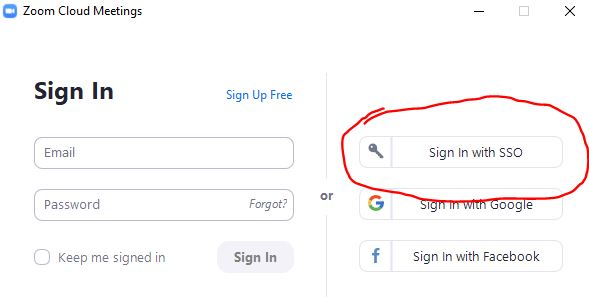
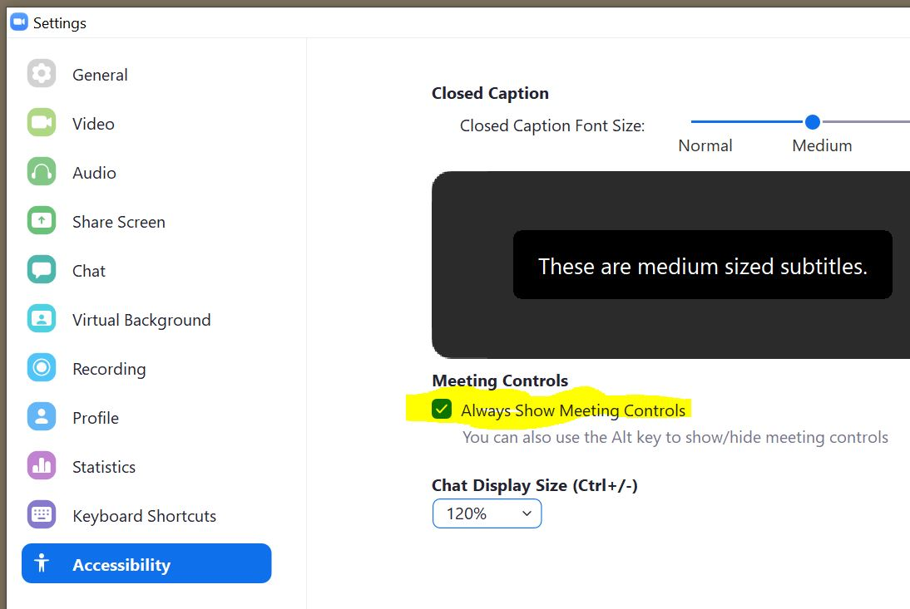
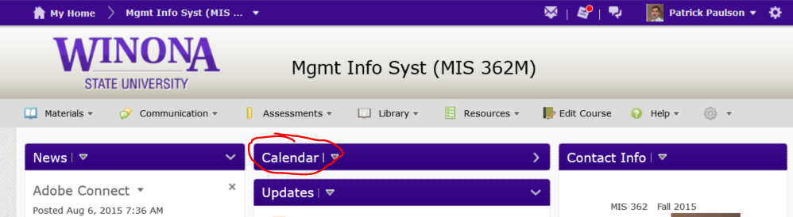
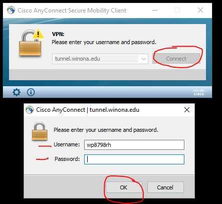

Learning Objectives
This assignment introduces fundamentally important concepts needed for this course.
You will begin to develop a digital technology toolkit that will serve you well in your career.
After completing this assignment you will be able to:
- Create purposeful folder structures
- Create and annotate screen shots using the Snipping Tool
or Snip & Sketch
- Update your computer software and run hardware checks
- Connect to USB Type-C dock to use multiple external monitors, wired networking
- Perform various software installations
- Install, configure and log into a Zoom web conference
- Configure the D2L course calendar to monitor assignment due dates
- Connect to the WSU network from off-campus using Virtual Private Network-VPN, technology
- Subscribe to curated business sources
- Create and combine PDF files
- Compose and send appropriate email communications
- Submit assignments, and check for confirming email
Assignment Overview
This assignment reviews basic computer concepts that you will need in this course and throughout your career.
You are expected to have a working knowledge of the following utilities.
If you do not understand how to use an item, perform a Google Search,
refer to the WSU Technology Knowledge Base, ask a teaching assistant, or ask the instructor:
- Microsoft Windows 10 or Mac OSx (need Print to PDF and other features-if not you must figure out work arounds)
- Set your primary email address to Winona State University.
- Go to the StarID self-service site
- Select the 'Sign in to Profile' tab
- Login with your StarID and password
- Click the 'Office 365 Contact' tab
- Click the 'Select New Student Contact Card' button
- Select the corrrect version of your Winona State email address
- CORRECT-->firstname.lastname @go.winona.edu
- DO NOT SELECT--> starID@go.winona.edu
- Have the Outlook Desktop Client installed and configured on your laptop.
- Install and configure One Drive for Business.
Your username is: StarID@go.minnstate.edu
If you encounter problems, search online for, and install the latest version of "Microsoft Support and Recovery Assistant for Office 365"
Again, login using your StarID@go.minnstate.edu
See Tech Support in Somsen 207 if you still have problems.
- Log into your LinkedIn Learning account. (More info here)
- File Explorer- (Finder on the Mac) to create and modify files and folders.
- Libraries-(PC Only) to organize your work into virtual folders.
- Context sensitive shortcut menus are activated by right-clicking various objects in a window.
- Tool bars, menu bars, status bars can be turned on and off using context sensitive menus.
- Use of common
shortcuts
, (Cmd+ for Mac) these will often work even when the menu options will not-
- Ctrl+A to select All
- Ctrl+C to Copy
- Ctrl+V to Paste
- Ctrl+Z to Undo
- Windows+L to lock screen
- Windows Key
- Use of the help screen to learn terminology
- Appropriate browser/application pairings. Note these can and do change!
- Chrome-Google Drive, YouTube, D2L
- FireFox-???, general web browsing?
- Internet Explorer, Edge-One Drive for Business, Office365
- Useful browser add-ins: Chris Pedrick's Web Developer Toolbar for FireFox
- Know basic HTML tags
- in FireFox menu select View>Page Source
- in IE menu select View>Source
- refer to W3Schools
- Validating HTML code-refer to the W3C Markup Service
- Using browser to print web pages as .pdf file
- Make sure url appears in the Header or Footer-
see Firefox example
see Chrome example
- Troubleshooting advice-at first try finding a solution yourself
- Learn to Google any error message before asking anyone else
- Refer to LinkedIn Learning
- Learn to use Stack Overflow
- Learn to use Tutor.com; see D2L for more info
- When seeking advice from teaching assistants or professor via email use proper etiquette
- subject line identifying course, section, assignment
- use of accurate terminology
- use complete sentences and proofread
- provide screen shots of error messages-use the Snipping Tool
Updated 5/11/2020-Professor Paulson
If you do not have OneDrive for Business installed and configured, before proceeding, install it per the resources in the Assignment Overview above.
You will learn to use OneDrive for Business to create folder structures to organize your work for this class, such as screen shots that prove you have accomplished certain tasks.
These items will be stored on your laptop, and One Drive for Business will automatically make a backup copy to the cloud so that you do not lose any work.
Now use Windows File Explorer or Finder(Mac) to create a MIS202 and Summative01 folder in OneDrive with the path structure: '
OneDrive will look like the image below, but with the appropriate course:
(25) 1. Use the Snipping Tool to make a screen shot of Finder(Mac) or File Explorer(Windows), showing your One Drive for Business folder.
It will look like this:
 One Drive for Business-Windows
 One Drive for Business-Mac
Save the screen shot as "Ex1" in your '
It can be a .jpg, .png or other appropriate image file format.
Screen Shot Ex1
To succeed in this course, and in your career,
It is essential that your computer (hardware and software) be functioning correctly.
- Make sure to restart (not suspend) your computer each day.
- Apply software updates as they are available.
- If you suspect something is wrong with your laptop, please contact WSU tech support for assistance in resolving the problem. Failure to do so will make this course more difficult.
Note for PCs- other in-depth testing and computer information is available using the HP Support Assistant.
Do not forget to check Software Center (Start, type 'Software Center') for the latest Windows and other updates.
(25) 2. Use the Snipping Tool or Mac keyboard shortcuts to make a screen shot of the Windows Update screen (PC) or About this Mac> Software Update screen
Save the screen shot as "Ex2" in your '
' folder.
It can be either a .jpg or .png file.
Screen Shot Ex2
Note: Exercise 3 has been removed-PgP 5/4/2020
Mac users-combining .pdf files can be done using PDF Preview mode.
For Windows PC-PDFill combines .pdf files that you will be creating during this course into one file.
If you do not have PDFill installed on your computer, you can download it from D2L.
Under Material >Content click on the PDFill module in the left column.
On the right side of PDFill, click the down arrow and select download
Change the file extension form .txt to .exe
Ignore the warning.
Double-click PDFill.exe to begin the installation process.
- Install PDFill, but select only "FREE PDFill PDF Tools (No Watermark)" option

- As an alternative to PDFill you can install Adobe Acrobat Professional from the Control Panel.
Mac users-make your screen shot of the PDF Previewer.
PC users-
After installing PDFill open the Control Panel.
In the upper right corner click the drop-down arrow and select 'Small Icons'.
Make sure you are at 'Control Panel>All Control Panel Items>Programs and Features'
Make the window big enough to view all the icons.
(25) 4. With the Snipping Tool make a screen shot.
Use the Yellow Highlighter Tool and highlight the software listed above.
Save the screen shot as "Ex4" in your '
Screen Shot Ex4
You will create one .pdf (portable document format) file from the screen shots taken above.
Mac Users- use PDF Preview to combine files.
Make sure you have Windows 10 installed, and you have the option 'Microsoft Print to PDF' in the Print Dialog Box.
If not, contact a TA or the professor.
 Print dialog box
Print dialog box
- Open File Explorer, navigate to your '
make sure the screen shot files are properly named (Ex1, Ex2, Ex4.. )
- Select all of the screen shots.
- Right Click and select 'Print' from the pop-up menu.
- In the bottom center of the 'Print Pictures' dialog box uncheck the box "Fit picture to frame"
- Click on 'Print' and save the file with the name "Summative01_Part1.pdf" in your '

- You have created a PDF file that contains all 3 screen shots. It is viewable in your Chrome browser, or using Adbobe Acrobat Reader. Do not worry about the order of the screen shots, nor the rotation.
(25) 5. Upload your file 'Summative01_Part1.pdf' to the D2L 'Summative01_Part1' Assignment folder.
- From the D2L 'Course Info' widget click on the url for the web conference.
Note that if this is the first time you have used Zoom, you may need to click the 'download & run Zoom' link.:
eProfessor Zoom Room-https://minnstate.zoom.us/my/eprofessor
- Complete single sign on- SSO- using
StarID@go.minnstate.edu
- Use your StarID password
- Note: your Single Sign On screen may be slightly different

- Under Settings>Accessibility, check 'Always Show Meeting Controls'

- On the meeting controls, open the Participants and Chat windows

In your Zoom account, click the
'Proflile' on the left side and view your profile.
Make the window big enough to view all the information.
(25) 8. Use the Snipping Tool, or appropriate keyboard shortcut on the Mac, to make a screen shot of your profile.
Save the screen shot as "Ex6" in your '
Screen Shot Ex6
All course assignments are listed in the D2L calendar.
Follow these steps to see course assignment due dates.
- Log into D2L and load this course.
- Click on 'Calendar' or 'Materials>Calendar' from the menu.

- Click on the 'List' icon.
Click the arrow until 'All events' appears.

- All graded items for this course are listed in due date order.
(25) 9. Take a screenshot of D2L showing the first few assignment due dates using the Snipping tool, or appropriate Mac keyboard shortcut.
Save the screen shot as "Ex7" in your '
Screen Shot Ex7
You will create one .pdf (portable document format) file from the three screen shots (Ex6, Ex7).
- Open File Explorer, navigate to your '
make sure the screen shot files are properly named(Ex6, Ex7.. )
- Select all of the screen shots.
- Right Click and select 'Print' from the pop-up menu.
- In the bottom center of the 'Print Pictures' dialog box uncheck the box "Fit picture to frame"
- Click on 'Print' and save the file with the name "Summative01_Part2.pdf" in your '
- You have created a PDF file that contains 2 screen shots. It is viewable in your Chrome browser, or using Adbobe Acrobat Reader. Do not worry about the order of the screen shots, nor the rotation.
(25) 10. Upload your file 'Summative01_Part2.pdf' to the D2L 'Summative01_Part2' Assignment folder.
Assignments can require answering questions by filling in one or more text boxes. Some assignments require using the Snipping Tool to take one or more screen shots that are printed to pdf, along with printing files as pdfs. PDFill is used to combine these pdfs into one file.
For this Exercise, and to complete this assignment please read all of these instructions.
Make sure that you have
- completed all the exercises,
- taken all the screen shots,
- combined the screen shots into one .pdf file,
- merged the screen shot .pdf file with the VPN .pdf file,
- uploaded the .pdf file to the D2L 'Summative01_Part2' Assignment folder,
This MUST be done while you are off-campus, or in Somsen 301 using the network patch cable designated as 'VPN', which is located by the teaching station.
Using WSU wireless or WSU network connections such as Warrior or Wazoo will not work, but it may work if you use the WSU 'guest' wireless network.
First read these instructions on connecting to the WSU VPN: https://learn.winona.edu/VPN
Note: For additional assistance, and if the above hyperlink does not work, search the WSU website for "Cisco VPN"
- If you are on the WSU network(in a building or dorm room) then turn off your Wi-Fi on your laptop.
If you are off campus, leave Wi-Fi on.
- If you are in Somsen 301, connect to the HBC VPN USB Type-C 3.1 cable that attaches to the HP dock. If not, skip this and the next step.
- Wait a few seconds, do a Google search to check your IP address.
- Start "Cisco AnyConnect" and bring up the login dialog box.
- Click the 'Connect' button, in the Username box enter your StarID, enter your WSU network password, and click 'OK':

- After a few seconds the dialog box will minimize and an icon will appear in the Task Tray.

Double click it to open the dialog box. Then click the 'gear' in the lower left to show the Statistics.

- Click the 'Export Stats...' button, save the file 'test.txt' in the folder '
- Open test.txt and print it as a pdf file named Ex8.pdf
It will look like this:

(25) 11. Make sure to print the Cisco VPN Statistics file as 'Ex8.pdf'' and save it in the folder '
Print PDF file Ex8
(25) 12. Using the Snipping tool take a screenshot of File Explorer showing your T: drive folder for this course, with the Cisco AnyConnect icon visible in the task tray.
Save the screen shot as "Ex8" in your '
Screen Shot Ex8
Publications:
To keep informed, you are strongly encouraged to read the many magazines available to you at no charge through Flipster.
Through the Krueger Library, you have access to online versions of The New York Times, The Wall Street Journal, and The Chronicle of Higher Education.
Instructions are below. If you have questions, please contact the Krueger Library.
New York Times:
1) Click on this link: https://libguides.winona.edu/az.php?a=n
2)
Choose the third item in the list, “New York Times (Institutional Subscription”
3) For your username, use your StarID@winona.edu. Then choose a password and indicate that you are “Student”. Choose your graduation year.
4) You may also have access to the NYT app through WSU Apps.
*To subscribe, you must sign up on campus.*
(25) 13. After subscriping to the New York Times, login and take a screenshot of the current edition's home page using the Snipping tool.
Save the screen shot as "Ex9" in your '
Screen Shot Ex9NYT
Wall Street Journal
1) Click on this link: https://libguides.winona.edu/WSJ
2) Enter your StarID and the password associated with your StarID
3) Follow the instructions and fill out the subscription form
4) Users with an existing account have the option to connect to the institutional subscription at the bottom of the “Create Account” page.
5) Repeat these steps every 180 days.
You may also have access to the WSJ app through WSU Apps.
(25) 14. After subscribing to the Wall Street Journal, login and take a screenshot of the front page using the Snipping tool.
Save the screen shot as "Ex9WSJ" in your '
Screen Shot Ex9WSJ
(25) 15. After accessing Flipster, open the latest issue of Wired magazine and take a screenshot of the cover using the Snipping tool.
Save the screen shot as "Ex9Flip" in your '
Screen Shot Ex9Flip
You will be creating one .pdf (portable document format) file from the screen shots that you have taken, and the pdf that you have printed from the VPN log file.
- Open File Explorer, make sure the screen shot files are properly named(Ex8, Ex9NYT, Ex9WSJ , Ex9Flip)
- Select all of the screen shots to be combined.
- Right Click and select 'Print' from the pop-up menu.
- In the bottom center of the 'Print Pictures' dialog box uncheck the box "Fit picture to frame"
- See the howtogeek article for more options.
- Click on 'Print' and save the file with the name "ScreenShots.pdf" in your '
- You have created a PDF file that contains all 4 screen shots. It is viewable in your Chrome browser, or using Adbobe Acrobat Reader. Do not worry about the order of the screen shots, nor the rotation.
- Use PDF Preview (Macs) or PDFill (Win) (installed in Exercise 4) to merge the ScreenShots.pdf file with the Ex8.pdf file created in Exercise 8, and save it as 'Summative01_Part3.pdf' in your '
(25) 16. Upload your file 'Summative01_Part3.pdf' to the D2L 'Summative01_Part3' Assignment folder.